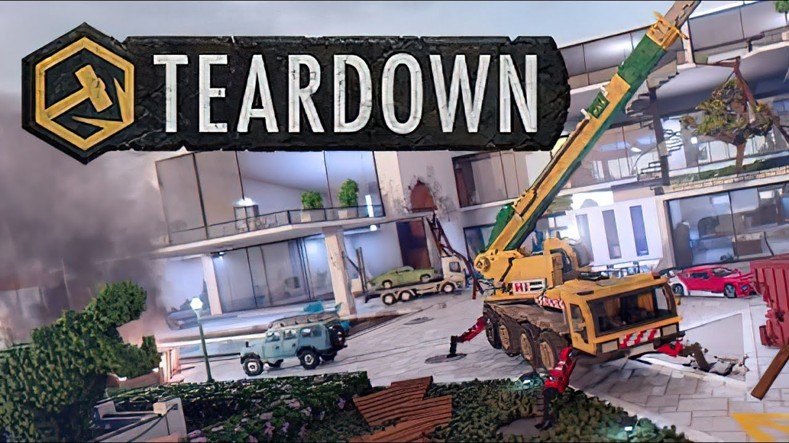

Like most games which allow users to create and publish content, Teardown is packed with unique experiences, with something for everyone. The main game includes a campaign where you play as the owner of a bankrupt demolition company, forced to aid police investigations after being caught demolishing a building for someone's enemy, as well as taking on similar jobs to the one that got you in trouble.
The game's custom mods allow you to create and play maps that add new mechanics and weapons, with stories that are essentially games within the game and maps that let you go haywire destroying whatever you want however you want.
Not much is left to be desired by the physics, with the voxel game engine allowing many moving parts and realism. However this brings up another issue, the lag. When the game has to process many moving voxels at once, such as by a huge explosion, the game slows to a halt (even on your high-end supercomputer!). There is a mod which allows you to have this go in slow motion to produce lag-free videos in real-time, however for a real-time gaming experience don't let the mayhem go too far. Nevertheless there is still much that can be done while remaining within the bounds of your computer

Speaking of computers, you'll need a good one to play this. Seriously, the game engine is built on ray tracing, which can't be disabled, so your GPU will at least need to be able to handle that at a reasonable framerate. However, apart from this, the game is content-rich and reasonably realistic (physics-wise, within the bounds of its art style), so if you are considering getting a better GPU, or already have a good one, this game should be at the top of your wishlist.
In conclusion, Teardown is a realistic game with tons of content, whether you want to go on missions to find or destroy, to wreck a city to your heart's content or to enjoy minigames created by the game's community. The user base is what leaves this game infinite replayability, as long as new mods are being created. However it will require a reasonably powerful computer to run, so if you've got one then this game is worth the price (especially on sale) and one of my top recommendations!
Comment Section
User1: This game is amazing!
User2: I'm loving the atmosphere.
User3: Challenging but rewarding gameplay.